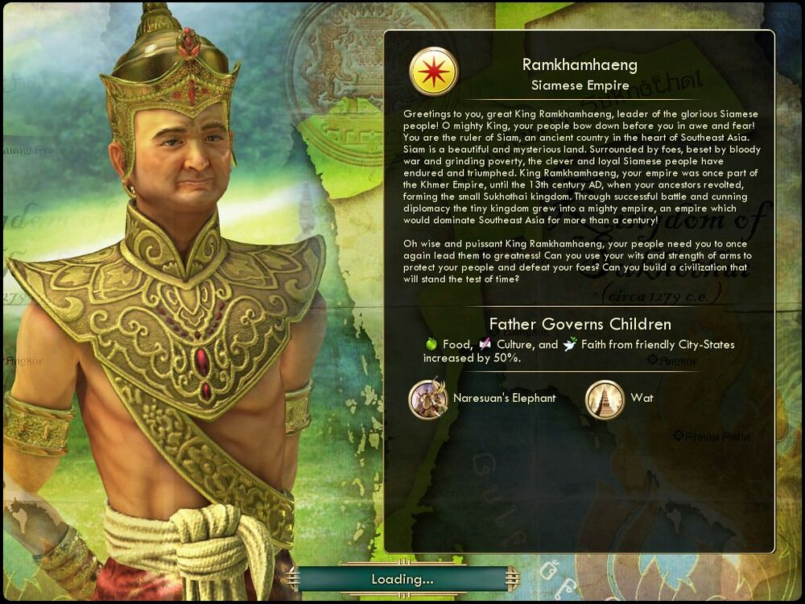

람캄행 Ramkhamhaeng시암 Siam |
|  |
| 시암족의 지도자 위대한 람캄행 왕이여, 반갑습니다! 오 위대한 왕이여, 그대의 백성이 경외로 그대 앞에 절합니다. 그대는 동남아시아 중심에 자리했던 고대 국가 시암의 군주입니다.
총명하고 성실한 시암족은, 적에게 둘러싸이고 끔찍한 전쟁과 뼈아픈 빈곤에 처해서도 살아남았습니다. 람캄행 왕이여, 그대의 제국은 크메르 제국의 일부였으나, 13세기 그대의 조상이
반란을 일으켜 수코타이라는 소왕국을 세웠습니다. 이 작은 왕국은 성공적인 전투와 교묘한 외교를 통해 동남아시아를 백 년이 넘게 호령한 막강한 제국으로 성장하였습니다!
오 현명하고 강대한 람캄행 왕이여, 다시 한번 그대의 백성을 영광으로 이끄십시오! 그대의 지혜와 힘으로 백성을 보호하고 적을 무찌르고 세월의 시련을 이겨낼 문명을 건설해 주시겠습니까? |
| 속성 | |
|---|---|
| 특성 |
군신은 부자와 같다
(Father Governs Children) 우호적인 도시 국가가 생성하는 식량, 문화 및 신앙이 50% 증가합니다. |
| 고유유닛 |
나레수안 코끼리
(Naresuan's Elephant) 기사를 대체하는 고유유닛입니다. 이동력이 4에서 3으로 감소하였으나 공격력이 20에서 25로 증가하고 기병 대항 보너스 +50% 승급이 추가됩니다. |
| 고유건물 |
와트
(Wat) 대학을 대체하는 고유 건물입니다. 대학의 원래 기능(과학 +33%)에 추가로 문화 +3을 추가로 얻습니다. |